You can also download a PDF copy of this lecture.
In the regression model \[ Y_i = f(x_{i1}, x_{i2}, \dots, x_{ik}) + \epsilon_i, \] it is assumed that \(\epsilon_1, \epsilon_2, \dots, \epsilon_n\) are mutually independent. Equivalently, it is assumed that \(Y_1, Y_2, \dots, Y_n\) are conditionally independent given \(x_{i1}, x_{i2}, \dots, x_{ik}\). That is, the distribution of any one \(\epsilon_i\) (or \(Y_i\)) should not depend on the values of the other \(\epsilon_{i'}\) (or \(Y_{i'}\)) (\(i' \neq i\)).
A weaker condition that \(\text{Cov}(\epsilon_i, \epsilon_{i'}) = 0\) for all \(i \neq i'\) is sufficient. The covariance between \(\epsilon_i\) and \(\epsilon_{i'}\) is defined as \[ \text{Cov}(\epsilon_i, \epsilon_{i'}) = \text{Corr}(\epsilon_i, \epsilon_{i'})\sqrt{\text{Var}(\epsilon_i)\text{Var}(\epsilon_{i'})}., \] Note that this implies the same condition for \(Y_i\) and \(Y_{i'}\).
Consequences: Severe violations of independence can result in two problems.
Biased standard errors, incorrect p-values, and incorrect confidence/prediction intervals.
Inefficient estimation of model parameters (and functions thereof).
Detection: A common reason for a lack of independence is that multiple observations are influenced by one or more common random but unobserved effects, or in some cases one observation influences another observation directly. Typically observations that are “closer” in some sense — time, space, or observational units — are not independent. Plotting with this in mind can sometimes reveal a lack of independence.
Example: Serial dependence — observations close in time. 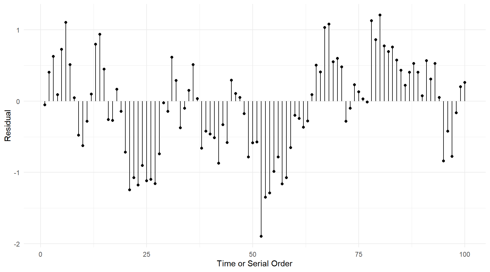
Example: Nested observations — observations within a common experimental unit.
source("http://webpages.uidaho.edu/~trjohns/grooming.txt")
head(grooming) id day frequency collar
1 m1 -6 0.66 before
2 m2 -6 0.63 before
3 m3 -6 2.16 before
4 m4 -6 1.54 before
5 m5 -6 0.56 before
6 m6 -6 2.04 beforetail(grooming) id day frequency collar
112 m4 7 5.07 after
113 m5 7 2.20 after
114 m6 7 2.52 after
115 m7 7 1.39 after
116 m8 7 3.84 after
117 m9 7 1.90 afterp <- ggplot(grooming, aes(x = day, y = frequency, color = id))
p <- p + geom_point() + facet_grid(~ collar, scales = "free_x")
p <- p + theme_minimal()
p <- p + labs(x = "Relative Day", y = "Grooming Frequency", color = "Rabbit")
plot(p)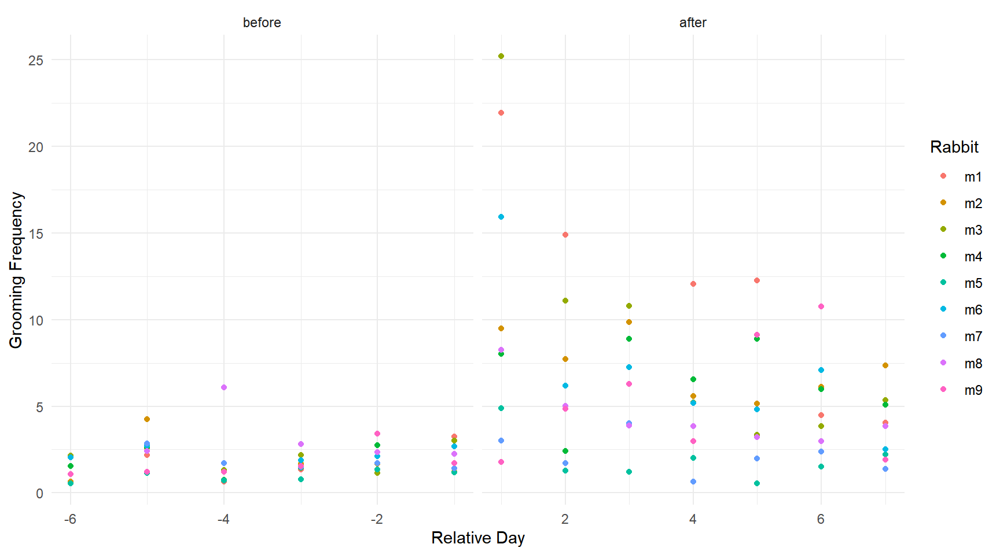
m <- lm(log(frequency) ~ day + collar + day:collar, data = grooming)
grooming$yhat <- predict(m)
grooming$rest <- rstudent(m)
p <- ggplot(grooming, aes(x = yhat, y = rest))
p <- p + geom_point() + geom_segment(aes(x = yhat, xend = yhat, y = rest, yend = 0))
p <- p + facet_wrap(~ id) + theme_minimal()
p <- p + labs(x = "Predicted Value", y = "Studentized Residual")
plot(p)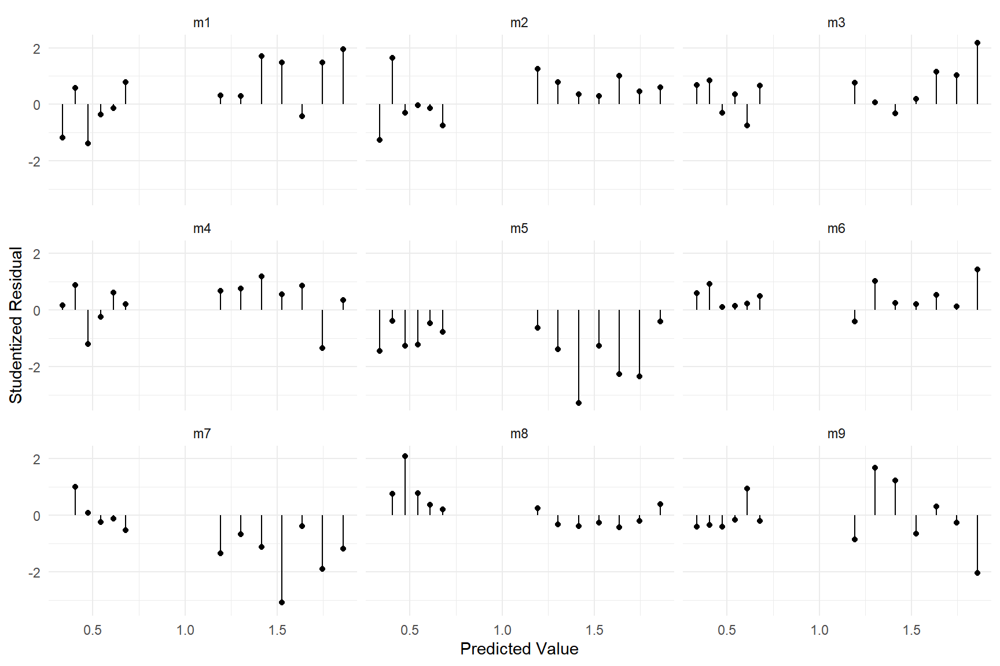
Solutions: There are several possible solutions.
Generalized least squares.
Robust standard error estimators.
Models that allow for dependence of observations.
We will discuss each of these in later lectures.
Description: It is assumed that the distribution of each \(\epsilon_i\) is normal, which implies that the distribution of each \(Y_i\) is also normal (conditional on \(x_{i1}, x_{i2}, \dots, x_{ik}\)).
Consequences: Confidence/prediction intervals and p-values may not be accurate if the distribution of \(\epsilon_i\) (or \(Y_i\)) is very non-normal, but only if \(n\) is very small relative to the number of parameters (\(p\)). This is because under fairly general circumstances as \(n \rightarrow \infty\) the sampling distribution of the model parameters (and functions thereof) “approach” a normal distribution (i.e., “asymptotically normal”) regardless of the distribution of the error/response. With the exception of prediction intervals, we only require that sampling distributions are (approximately) normal.
Consider the model \(Y_i = \beta_0 + \beta_1 x_i + \epsilon_i\) where the distribution of each \(\epsilon_i\) is 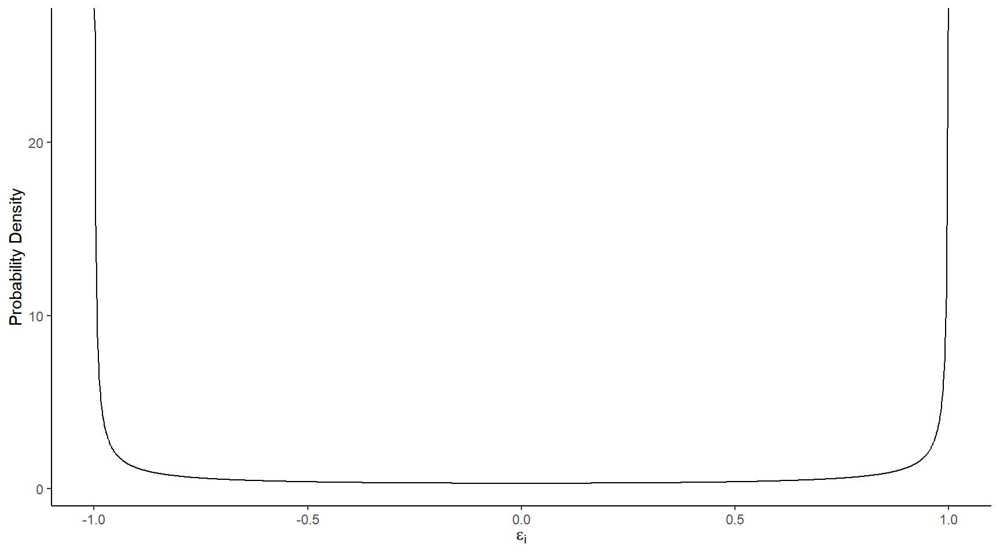 and \(x_i\) is 1, 2, or 3 with \(n/3\) observations at each distinct value of \(x_i\). What about the sampling distributions of \(\hat\beta_0\) and \(\hat\beta_1\)?
Sampling distributions when \(n = 3\): 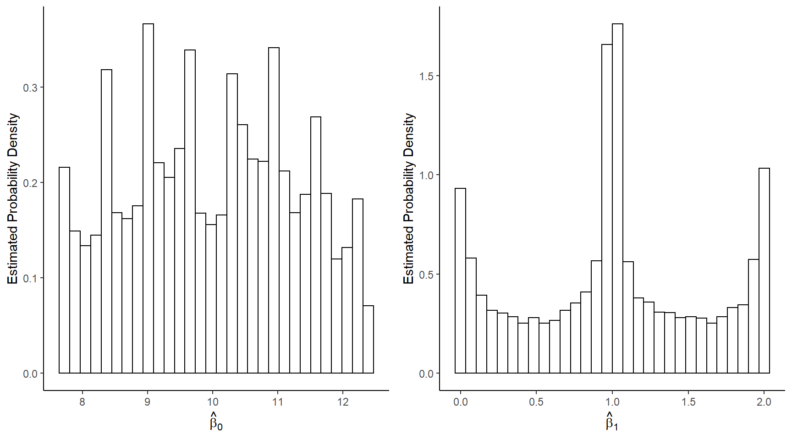
Sampling distributions when \(n = 6\): 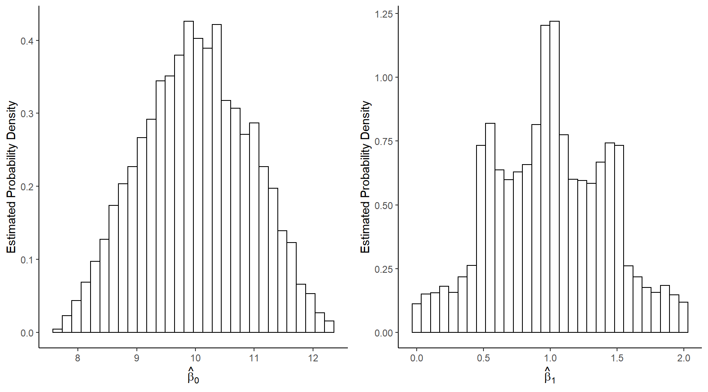
Sampling distributions when \(n = 12\): 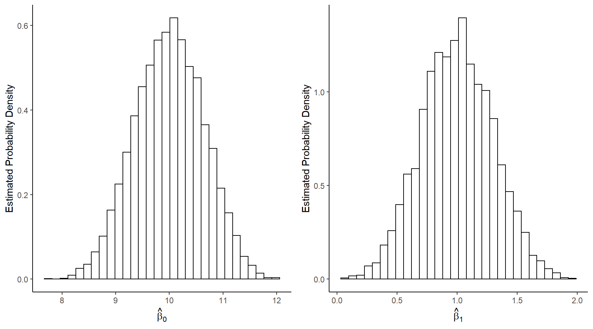
Detection: Plots of standardized or studentized residuals can reveal severe non-normality. Histograms can be used, but quantile-quantile (qq) plots are preferred. A qq-plot is a plot of the sorted residuals against their expected “order statistics” under the assumption that they are normally-distributed.
m <- lm(Gas ~ Insul + Temp + Insul:Temp, data = MASS::whiteside)
hist(rstandard(m))
qqnorm(rstandard(m))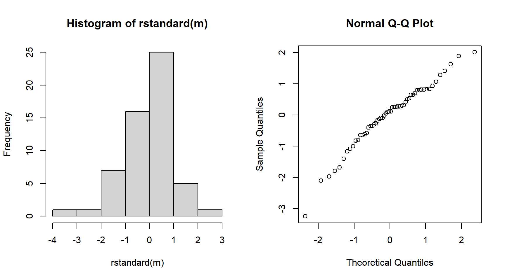 Note that it not usually appropriate to use plots of the response variable since they are not identically distributed.
Solutions: For severe non-normality there are generally three solutions.
Increase \(n\) (unless \(n\) is already “sufficiently large” and then non-normality is a non-issue).
Transform the response variable.
Use a model that assumes the response variable has some other distribution.
A variety of statistical tests have been proposed for various assumptions, where the null hypothesis is that the assumption is true. In my opinion these are rarely very useful for several reasons.
Such tests have their own assumptions, which may not be well met.
Such tests do not clearly reveal the severity of the violation. While it is true that tests tend to have more power when the violation is severe, they can also have high power when the violation is negligible (as may also be the consequences) but \(n\) is large.
Perhaps the question to ask is not if the assumption is wrong, but rather if it is “reasonable” — i.e., is it “close enough” or are inferences likely to be very adversely affected?
Regression models do not make any assumptions about the distribution of the explanatory variables. Their distribution, however, does affect inferences just as sample size does.
Example: Consider a linear model \[ E(Y_i) = \beta_0 + \beta_1 x_{i1} + \beta_2 x_{i2}, \] where the explanatory variables are distributed as shown below. 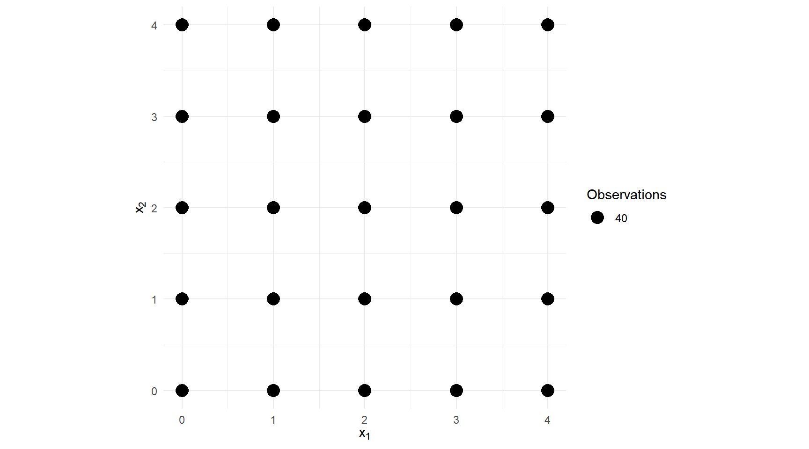 Note the standard errors for \(\hat\beta_1\) and \(\hat\beta_2\) shown below.
Estimate Std. Error t value Pr(>|t|) 2.5 % 97.5 %
(Intercept) -0.1753 0.3543 -0.4949 6.208e-01 -0.8706 0.5199
x1 1.0264 0.1120 9.1616 2.837e-19 0.8066 1.2463
x2 0.9488 0.1120 8.4688 8.794e-17 0.7289 1.1687Now suppose we reduce the variance of the first explanatory variable. 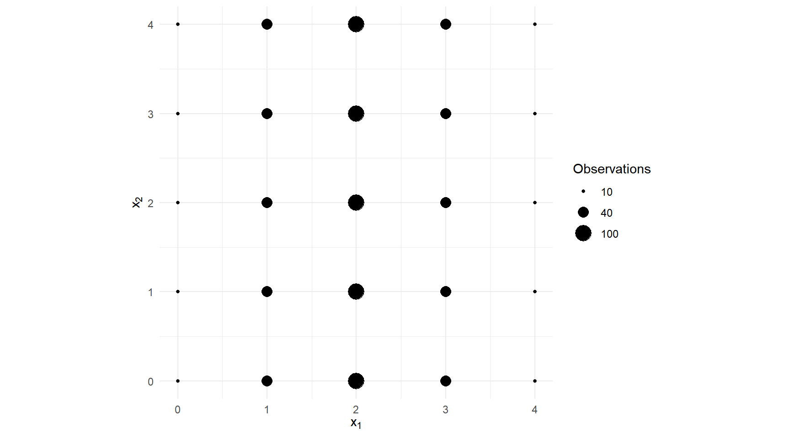 Note the standard errors for \(\hat\beta_1\) and \(\hat\beta_2\) shown below.
Estimate Std. Error t value Pr(>|t|) 2.5 % 97.5 %
(Intercept) 0.2183 0.4446 0.491 6.235e-01 -0.6541 1.091
x1 0.8855 0.1757 5.039 5.568e-07 0.5406 1.230
x2 1.0002 0.1111 8.999 1.127e-18 0.7821 1.218Now suppose that the two explanatory variables have the same variance as in the first example, but have a much higher covariance. 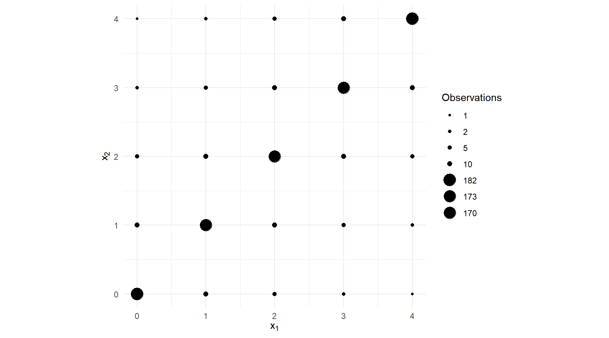 Note the standard errors for \(\hat\beta_1\) and \(\hat\beta_2\) shown below.
Estimate Std. Error t value Pr(>|t|) 2.5 % 97.5 %
(Intercept) 0.05121 0.2726 0.1879 8.510e-01 -0.4837 0.5862
x1 0.88591 0.2873 3.0838 2.100e-03 0.3222 1.4497
x2 1.15892 0.2873 4.0341 5.901e-05 0.5952 1.7227This last example illustrates what is called (multi)collinearity where there exist \(\lambda_0, \lambda_1, \lambda_2, \dots, \lambda_k\) (other than that all \(\lambda_0, \lambda_1, \lambda_2, \dots, \lambda_k\) equal zero) such that \[ \lambda_0 + \lambda_1x_{i1} + \lambda_2x_{i2} + \cdots + \lambda_kx_{ik} \approx 0 \] for all observations. Another way to say this is that we could almost determine the value of one explanatory variable from the others using a linear model where that explanatory variable is the response variable. When there are only two explanatory variables involved this will be evident from a high correlation (in absolute value) between those two explanatory variables.